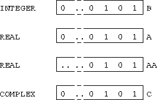

TRANSFER converts (not coerces) physical representation between data types; it is a retyping facility. Syntax:
TRANSFER(SOURCE,MOLD)
REAL A(10), AA(10)
INTEGER B(20)
COMPLEX C(5)
...
A = TRANSFER(B, (/ 0.0 /))
AA = TRANSFER(B, 0.0)
C = TRANSFER(B, (/ (0.0,0.0) /))
...

For more information, click here